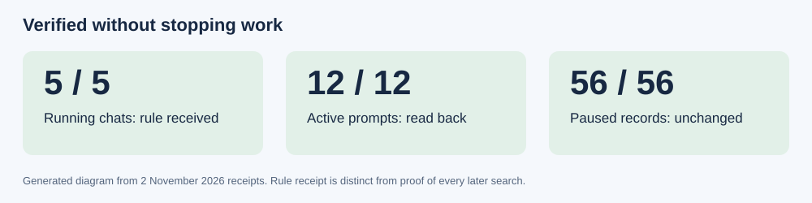

Five active chats received the refreshed shared rule at normal instruction boundaries; all twelve ACTIVE automation prompts were updated and read back; fifty-six PAUSED automations were unchanged. Parent rgignore inheritance and current temporary environment exclusions were verified with tiny local fixtures.

Fresh generated diagram from actual saved receipts; no live interface capture or universal behaviour claim.
| Chat | Refreshed instruction receipt (UTC/GMT) | Evidence level |
|---|---|---|
| run the marketing analysis jobs now, always fix browser use… | Received 2026-11-02T02:29:22.548Z | Receipt verified; later use not separately certified |
| Refine Walk With Me visualiser | Received 2026-11-02T02:29:57.146Z | Receipt verified; later use not separately certified |
| Render Ganesh short test | Received 2026-11-02T02:29:58.220Z | Receipt verified; later use not separately certified |
| Add Julia fractals to FrameRudiments | Received 2026-11-02T02:29:17.988Z | Receipt verified; later use not separately certified |
| Write Syn architecture overview | Received 2026-11-02T02:29:16.441Z | Explicit applied record also found |
No chat messages, wakeups, interruptions, process stops or restarts were used. The app delivered the changed shared instructions during normal work. Private coordination records are additional discoverable context and are not counted as receipt evidence.
Every active prompt update immediately passed an exact content readback and a comparison allowing only prompt/update-time changes. All parsed fields of the 56 paused automation records remain identical. A later independent Music platform monitoring cadence change was observed and preserved; this task did not revert another owner's work.
The default filters now also cover the temporary build and smoke-test environments used by current work. A small C: fixture verified parent .rgignore inheritance inside a nested repository boundary while retaining source, tests and documentation. No Z: tree scan was used.
Already-running native commands keep their existing search plan. New ordinary ripgrep discovery sees the filters; explicit paths, ignore overrides and PowerShell recursion require the shared scope rule. No future scheduler run was forced.
Structured report · Five instruction receipts · Automation state comparison · Nested repository filter test · Filter readbacks
The official instruction-discovery documentation describes instruction loading at run start. This report relies on actual per-chat refreshed-message receipts, rather than assuming that editing a file establishes live adoption.
Administrative propagation of the already-recorded orphan-search diagnosis; no distinct reader-interest development beyond that passing technical story. The earlier technical diagnosis keeps its passing story assessment and existing continuation.